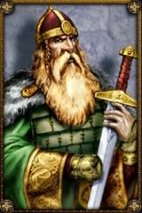

Joué par :
Kusato Joué par :
[ Information masquée ] Age : 45
Lieu de naisance : auberge de la lune écarlate
Sexe : Homme
Race : Nain
Faction : Alliance
Formation : Voleur
Niveau : 15
Guilde : Informations hrp : Je suis le gérant d'une maison de jeux qui se trouve dans stormwind, je vous invite tous à venir vous y détendre en buvant une chopine avec nous ou en pariant de large fortune au dé. Voleur, menteur, tricheur et mendiant, vous n'étes pas les biens venues!
Description : Je suis né dans l'auberge qui appartient à mes parents depuis toujour, je suis né dans la cave et la premiére odeur que j'ai sentit fut celle de la biére, cette odeur me suivra d'ailleur tout au long de ma vie...J'ai passé mon enfance dans cette même auberge avec mon frére helvarg, et notre jeunesse fut bercé par les contes des anciens rois nains que nous racontais notre pére, ces histoires me passioné plus que tout et tout jeune déja je juré de devenir comme l'un de ces seigneurs. Puis mon frére partit s'engager comme montagnard a Ironforge et pour tuer le temps, j'aider mes parents a la taverne, c'est là que j'appris l'art du vol, du lancer de couteau et du combat. L'ambiance de la taverne me plaisait particulierment et très vite je m'y fit ma place. Mais les bonnes choses ont une fin, et mes parents, voyant que je devennais assez robuste pour affronter le monde exterieur, m'envoyère par delà les montagnes pour rejoindre mon frére, se que j'aurais fait bien volontier; mais mon coeur me disait que j'étais fait pour une autre vie que celle de montagnard, et je décida ainsi de me cacher dans les montagnes pendant 3 ans pour me perfectionner au combat.
C'est ainsi que se déroula mon enfance, après ces 3 années sabattiques, j'alla a Ironforge pour voir mon frére mais on m'appris qu'il avait été capturé par une troupe de mort vivant, dieu seul savait se qu'il lui était arrivé ensuite. J'érrais donc dans Ironforge attristé par cette funeste nouvelle quand un tunnel m'intriga particuliérement, je penetrais à peine a l'interieur qu'un gnome me poussa en avant en me criant que j'étais en retard. j'atterit dans une nacelle metallique, et quand je resortit, je me trouver dans un tout autre endroit: Stormwind.
L'ambiance et la gaieté de cette ville m'envouta, et je décida que c'était ici que je ferrais fortune! Mais arrivé sans le sou dans cette ville, la réalité m'apparut assez vite; je finirais mendiant tout au plus. Et c'est la que j'ai rencontré un compatriote nain, nommé Rumwald qui m'aida, qui m'offrit le gîte et le couvert. Nous devînmes ami, et avec lui, j'eu pour idée d'ouvrir..... une maison de jeu!
L'histoire s'arréte là, la suite... c'est le destin qui nous la dira!
quoi qu'il en soit, excuser moi pour la qualité médiocre de l'écriture...
si vous passer dans stormwind, venez jeter un coup d'oeil dans ma maison de jeux =) je posterais un message sur le forum pour indiquer le lieu exacte et les horaires d'ouvertures.
svp aider nous a faire marcher la seul maison de jeu de kirin tor !
perder autant de sou qu'il vous plaira chez nous, nous sommes la pour sa!
Quatrième Ère [3]
Lune de la Force
Décade du Panda
Décade du Gorille
Décade de l'Ours
Lune d'Agilité
Décade du Tigre
Décade du Singe
Décade du Faucon
Lune de l'Esprit [3]
Décade de la Chouette
Décade de la Baleine [1]
Le pacte
On était tous dans la cave du cochon siffleur, moi rumwald, et deux autres personnes dont je ne dirais pas les noms...
Rumwald était nerveux, je sais pas pourquoi, je crois qu'il a vécut des choses qu'il ne vaut mieux pas vivre... je lui demanderais un jour!
Enfin reprenons, on étaient tout les quatres dans la cave, rumwald a ma gauche, et on parlementait, sa fesait une semaine qu'on parlementait avec ces gens là, lors de petites entrevues discréte...
C'était des tueurs, qui fesaient partie d'une grande organisation: La strangule....
Ils nous avaient proposés de s'allier avec eux... et on discutait le contrat... sa a duré longtemps, les minutes semblaient des heures et Rumwald était trés nerveux, finalement on s'est accordé, en quelques poignés de main c'était officialisé:
La maison de jeux kusato est désormais partenaire de la strangule...
On traite ces gens là d'assassins, de terroristes, mais finalement, sont-ils plus assassins que des gardes qui jettent des innocents en prison?
humm le sujet est sensible, donc je vais m'arrété là, mais prenez une seconde pour y réfléchir, et si vous vous sentez triste... venez dans le parc de stormwind, dans ma maison de jeux, vous serez acceuillit avec un grand sourire et on vous y servira un bon remontant !
Décade du Lapin [2]
Une bien heureuse nouvelle
Tout a l'heure, alors que je me trouvé dans ma maison de jeux a stormwind, un chevalier de la croisade écarlate s'installa a coté de moi, nous échangâmes quelques banalités, puis il m'avoua qu'il avait vu un nain; au visage presque identique au mien lors d'une escarmouche prés de Brill, en terre reprouvée. Mon "sosie" était esclave des morts vivants et portait des fagots de bois. Ce sosie, j'en suis sur est mon frére, qui a disparut il y a déja 3 saisons, et je me dois d'aller le retrouvé, c'est pour cela que j'ai confié la direction de la maison de jeux a rumwald. Désormais je passerais mon temps a m'entrainer dans le Loc Modan, en vue d'une croisade pour Brill.
une bien étrange mésaventure
Aujourd'hui, Rumwald, Elethir et moi méme étions en train de flaner dans stormwind quand nous entrames dans une taverne du quartier mage...
rien de bien extraordinaire pour l'instant, mais c'est aprés que les choses se sont gatées !
Nous buvions..... enfin..... JE buvais bien sagement quelques chopinnes quand tout a coup, un gros mal de téte m'assaillit, etait-ce une geule de bois précoce? Non, c'était bien plus douleureux, je sortit donc pour me rafraichir les idées quand tout a coup... Paf! gros trou noir...
Je ne repris connaissance que quelques minutes plus tard, et Rumwald m'expliqua alors la terrible bourde qu"il venait de commettre !
Retour en arriére ! Je suis encore etendu là, sur le perront de la taverne, et je marmone des choses incompréhensibles, mais au bout d'un moment, je me réveille, aparement sans aucun souvenir de qui je suis et de ou je suis... et deviné se que rumwald m'a fait croire? Il ma expliqué que j'était un perroquet, et que mon Vrai Perroquet lui, était Kusato... je crois que c'est la que sa a vraiment dérapé !
Aprés avoir fait un nid au pied d'un arbre, aprés avoir agressé moult passant et sauté deux fois de la tour des mages de stormwind pour essayé de m'envoler, Elethir a décidé d'apeller son ami druide a la rescousse. Fort heureusement, ils réussirent a me mettre a peu prés hors d'état de nuire, et grace a de puissant sort ( et aussi un trés gros coup sur la téte) ils ont réussit a me faire retrouver la raison....
Mais d'aprés le druide.... Une expérience comme celle la laisse d'eternel sequelles, et malheureusement, je me rend bien compte que parfois... je m'exprime en fesant des cui cui, et en sautillant partout...
Quoi qu'il en soit, je m'excuse officielement devant toutes les personnes que j'ai harcelé durant cette dur passe....